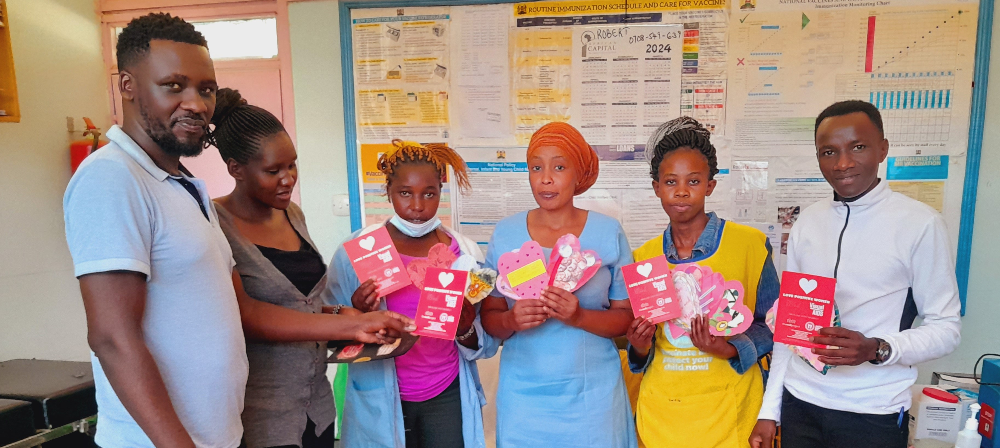
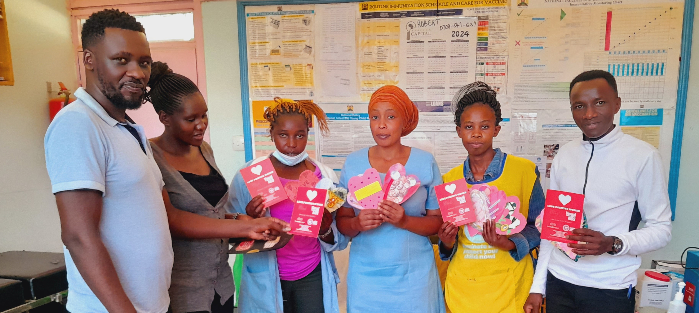

Valentines Cards
In February 2024, we received a delivery of hand-made customized Valentine’s cards from the Loving Positive Women offices in New York. These were well received by our clients and helped spread love and positivity during the Valentine’s season. The personalized cards were beautifully crafted and filled with heartfelt messages, bringing a smile to the faces of our clients. It was a touching gesture that deepened the connection between our organization and the Loving Positive Women initiative.
Loving Positive Women Initiative
Our collaboration with the Loving Positive Women initiative aims to create an environment where women living positively can feel loved and involved in their communities. . The initiative reached out to 84 women in Nakuru County, providing them with resources to boost their self-worth and confidence.
Through this project, we empower women living with HIV/AIDS by offering workshops and support to enhance their personal development. It’s our belief that, together, we can build a more inclusive and compassionate society.


 
